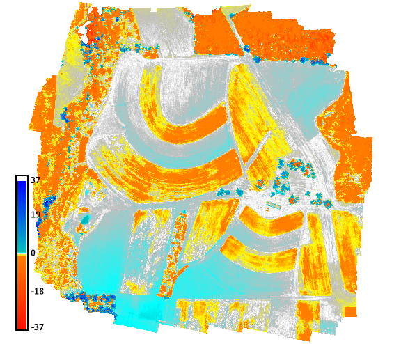
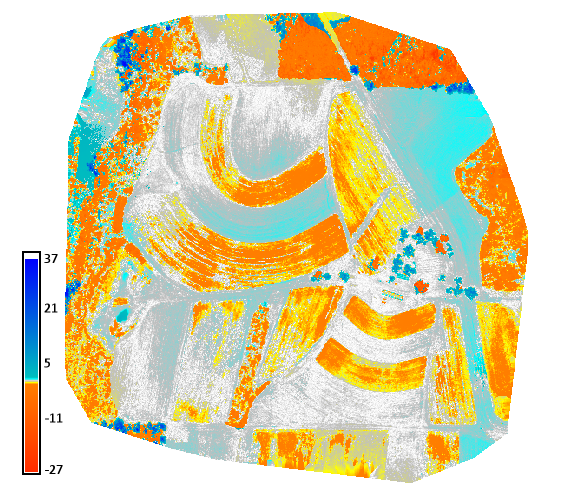
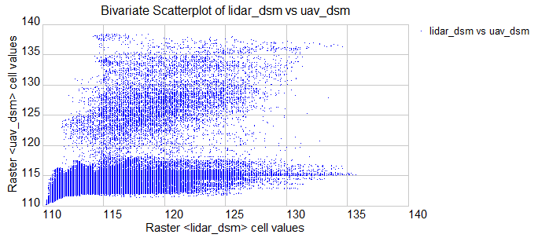
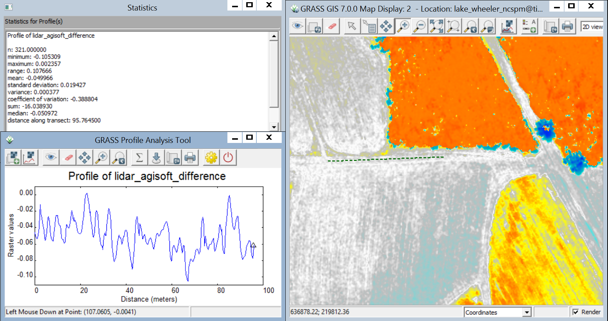
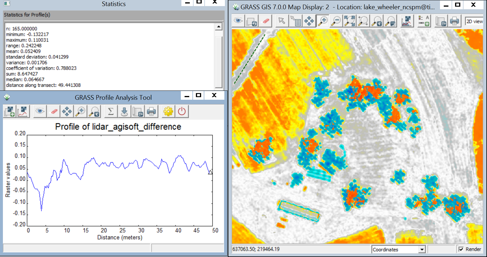
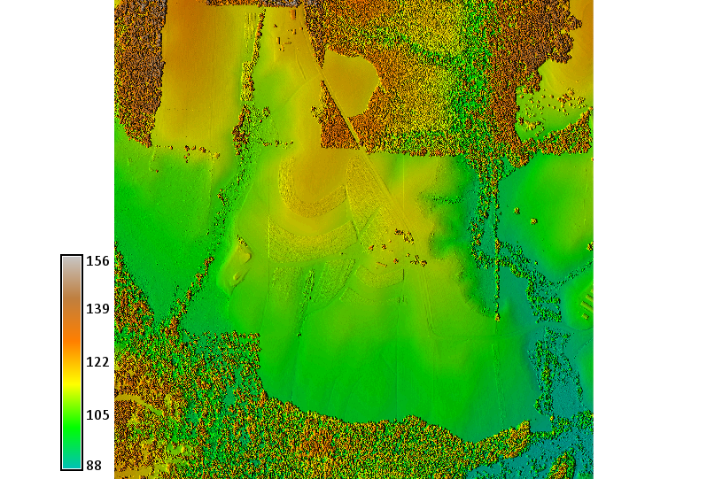
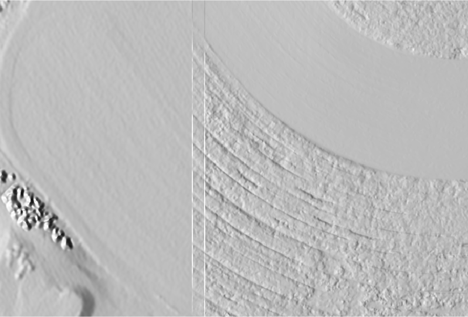

Methodology
First I compared the difference between the lidar and June UAV DSMs computed with Agisoft and Pix4D. Both had minimal distortion around the building near our launch site. Both relatively low distortion on the fields without crops near the center, although both had some distortion on southeastern slopes. The Agisoft DSM had more distortion in the southwest corner (Fig.1), while Pix4D had more distortion in the east-north-east (Fig.2).
The difference between the lidar and agisoft DSM

The difference between the lidar and Pix4D DSM

I initially selected a small region around the building for my region of minimal distortion. For this region I compared the difference between the lidar and UAV DSMs using a bivariate scatterplot and profile of stables features like the roads and building. The scatterplot shows a strong divergence in many elevation values above 155m where the vegetation differs (Fig. 3). A bivariate scatterplot of (relatively stable) bare earth areas may show any systematic shift. A profile sampled on a road in the north showed a shift in the lidar of -0.05m (Fig.4). Profiles sampled near the building, however, showed a shift of 0.05-0.0 (Fig.5).
Bivariate scatterplot of the difference between the lidar and minimal distortion UAV DSMs.

A profile of a road in the north of the region

A profile of a road near the center of the region

I used map algebra to fuse the minimally distorted region of the UAV DSM into the larger region of the lidar tile (Fig.6). I set an region 6 pixels wide around the border of the minimally distorted UAV DSM. I computed the mean of the UAV and lidar data for this border region to make a smoother transition between the two datasets (Fig.7). While this creates a transition zone with intermediate values, the transition is a shift rather than a gradient between the datasets.
Fused lidar and UAV DSMs

Detail of the relief of the fused lidar and UAV DSMs showing the border between the datasets

Discussion
A bivariate scatterplot of the difference between bare earth DEMs may show any systematic shift. This could be used to correct systematic error in the lidar data. A bare earth DEM could be computed from the UAV DSM using v.lidar.mcc to classify ground, r.random to fill randomly resample the ground data and fill voids, and v.surf.rst to interpolate the ground data. To smoothly fuse the lidar DEM with the UAV DEM randomly resample both DEMs, patch the point clouds, and interpolate the patched point cloud. Optionally, use the DEM with a smaller extent (the UAV DEM) as a mask for the DEM with a larger extent (the lidar DEM) using r.random's cover map.